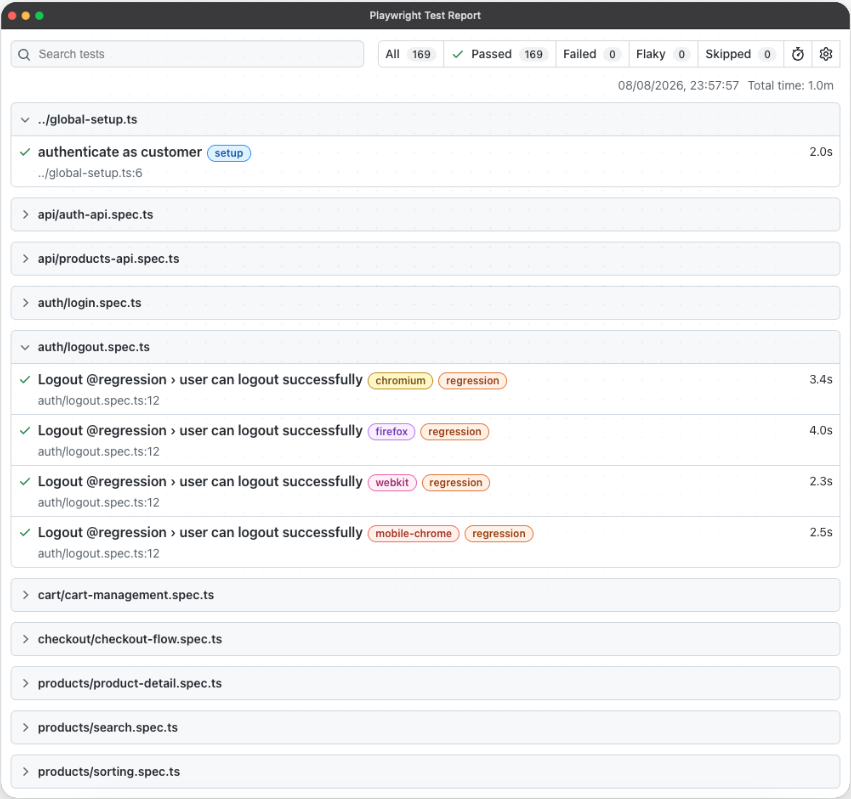

Ship your frontend
with confidence.
Reliable Playwright automation for modern engineering teams.
Services
Playwright Framework Setup
Production-ready test infrastructure tailored to your stack from day one.
End-to-End Testing
Comprehensive test coverage for critical user journeys and workflows.
Flaky Test Fixes
Eliminate unreliable tests that slow down your team and erode CI trust.
CI/CD Integration
Seamless pipeline integration with parallel execution and smart reporting.
Featured Projects
See Playwright in Action
Production-ready test automation
Tests should give your team confidence, not create another maintenance burden. Our Playwright frameworks provide clear reporting, reliable execution and actionable failure information.

About
I help engineering teams ship faster by building reliable, maintainable test automation with Playwright. With years of experience across startups and enterprises, I've seen what separates test suites that enable rapid delivery from those that become a bottleneck. I work with your team to build the former.
Pricing
Starting from
£350
Project-based pricing. Every engagement is scoped to your needs.
Discuss Your Project